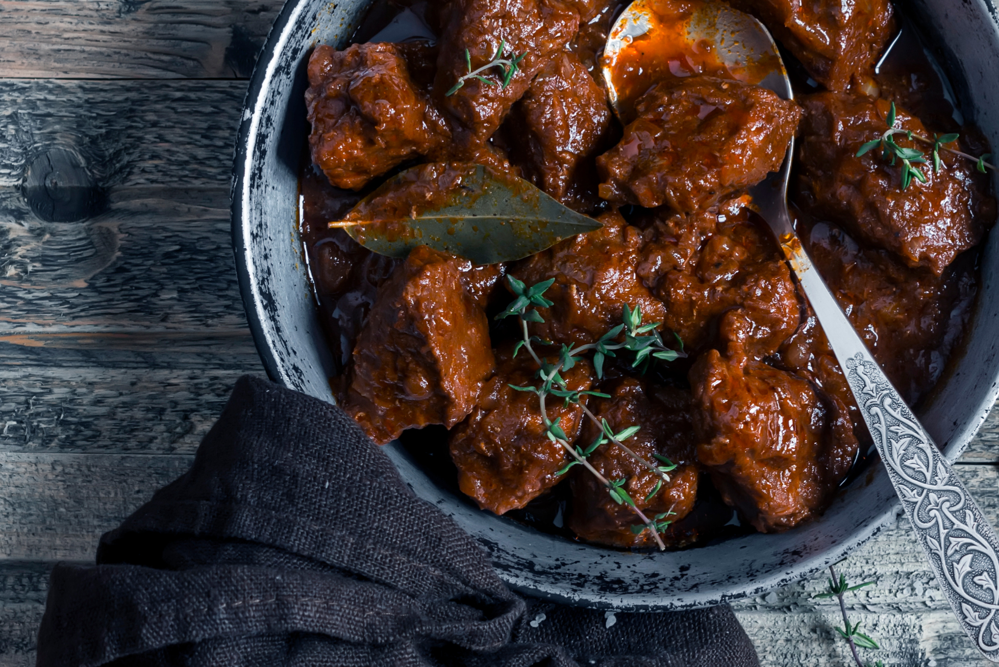

Flemish Stew

Description
This Belgian classic is a rich and savoury traditional meat and onion stew made with brown beer.
This is a perfect dish for in the cold winter months.
Ingredients
for 4 people
- 800g beef cut into pieces
- butter
- 2 onions
- 3 cloves or garlic
- 2 leaves of laurel
- pepper and salt
- 1 tablespoon of Sirop de Liège (apple-pear syrup)
- 1 tablespoon of flour
- 1 tablespoon of balsamico
- 1 tablespoon of dark soy sauce
- 3 bottles of brown beer (Leffe or Orval are good options)
Steps
- Cut the onions into rings. Stove them in a large pot until they become slightly transparant.
- Add the garlic and one tablespoon of flour to the onions.
- Add one bottle of brown beer and the two laurel leaves
- Bake about half of the beef in a seperate pan in some butter until it has a brown crust. add pepper and salt to the meat.
- Add the baked meat to the onion mix and deglace the meatpan with half a bottle of dark beer.
- Bake the rest of the meat and repeat the proces of deglacing the pan after adding the meat to the mix.
- Add the spoon of balsamico, soysauce, Sirop de Liège to the mix.
- Put the lid half on the pot but dont close it off completely. Add the last bottle of beer during the next hours. let it stove on a low fire between 2 and 4 hours. If the sauce is too watery after 2 hours you can remove the lid to let the beer evaporate.
- Serve with fries!